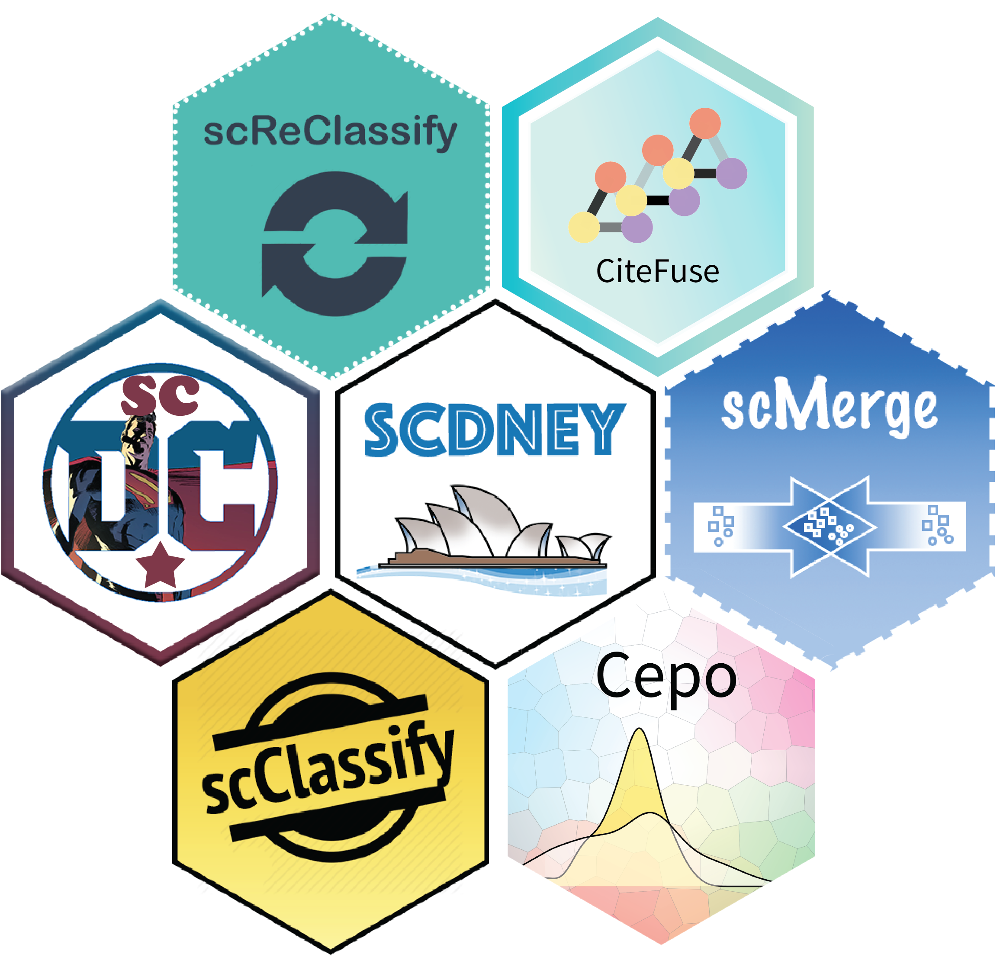

scdney is a wrapper package with collection of single cell analysis R packages developed by team of Sydney Precision Bioinformatics Alliance at The University of Sydney.
More information about the scdney package: https://sydneybiox.github.io/scdney/.

Installation
Before running the installation command below, some R dependencies must be installed. This can be done as follows:
install.packages(c("BiocManager","remotes"))To install all packages in available scdney and attached the installed scdney packages in the current R session.
# install scdney packages
BiocManager::install("SydneyBioX/scdney")
# load scdney packages
library(scdney)Installation Notes
Installation Time
Installing the whole suite of packages can take a long time on UNIX-based systems:
- Around 6 mins when using prebuilt binaries from r2u (discussed below). Unfortunately, this only works on Ubuntu LTS systems.
- Around 20 mins on a basic r installation including some basic Bioconductor packages (e.g., bioconductor_docker image).
- More than 1 hour on system with a basic r installation (e.g., r-base image)
If compiling the binaries locally is a priority, this issue can be partially addressed by adding MAKE='make -j NCORES' to one’s Renviron file.
-
NCORESshould be replaced be the number of jobs to run in parallel.
Alternatively, this process can be made significantly faster by using r2u. This project builds r packages for Ubuntu LTS repository system and integrates them with the system package manager. This will lead to significant increases in performance. An example docker build image for this method is included in the /build directory.
Non-R Dependencies
There are several non-R dependencies that must be installed in order for scdney to install correctly. Most of these are installed by default, but if there is a problem in the installation, one of this system requirements is likely to be the culprit.
-
make,libpng-dev,pandoc,libjpeg-dev,zlib1g-dev,libfreetype6-dev,libfribidi-dev,libharfbuzz-dev,libxml2-dev,libfontconfig1-dev,pandoc-citeproc,cmake,libicu-dev,libssl-dev,libglpk-dev,libgmp3-dev,libtiff-dev,libcurl4-openssl-dev
scdney Workshops Series
- Single-cell analysis fundation workshop, where we use two mouse liver datasets to illustrate three critical topics in scRNA-seq analysis: Quality control of scRNA-seq data, data integration of multiple scRNA-seq data, and cell type marker identification.
- Advanced Phenotyping using scdney, where we describe various strategies for cellular phenotyping, construct and characterise trajectory, and identify cell-cell interaction.
- CITE-seq data analysis using CiteFuse, a hands-on experience to the CiteFuse package workshop.